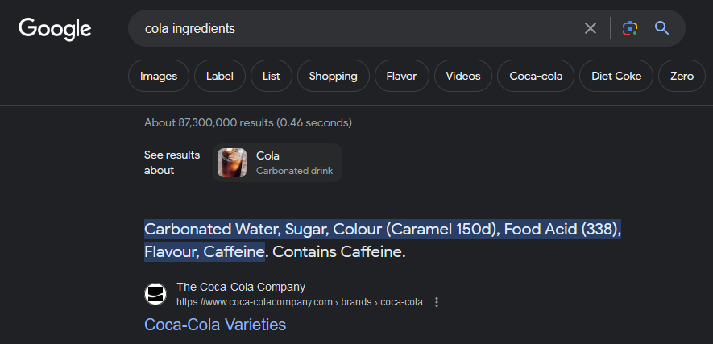
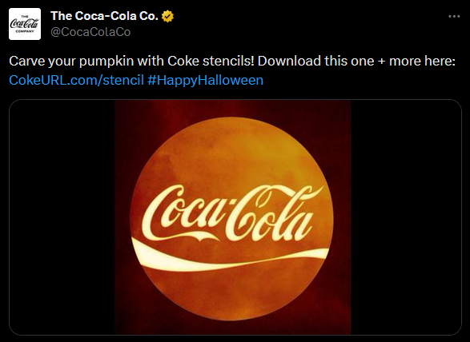
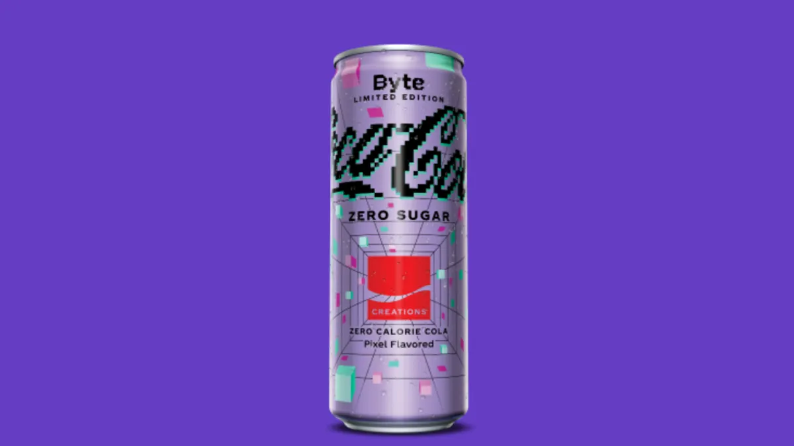
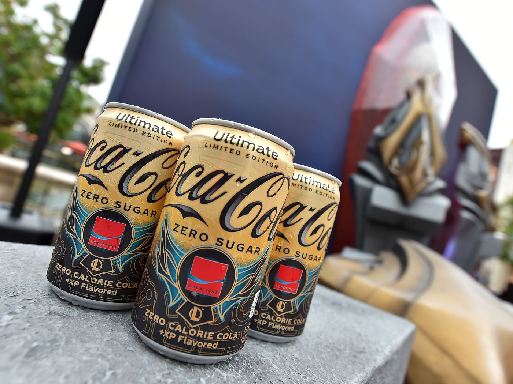
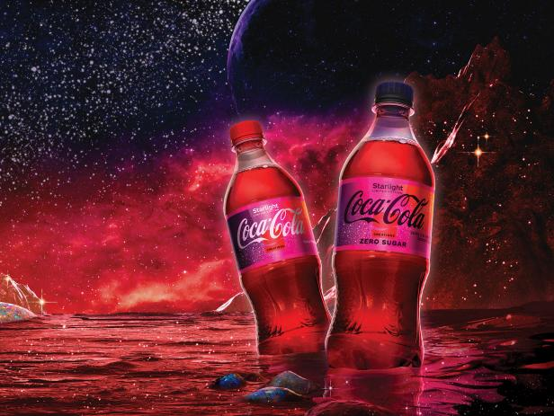
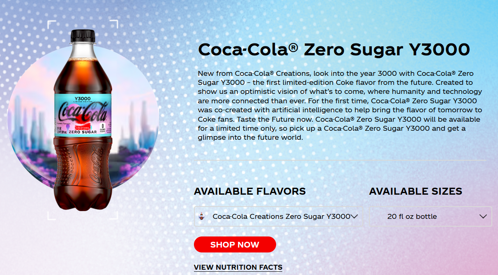
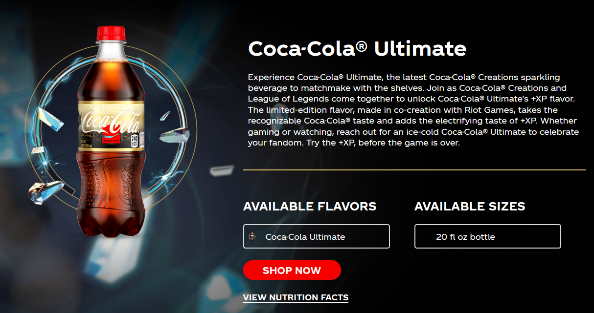
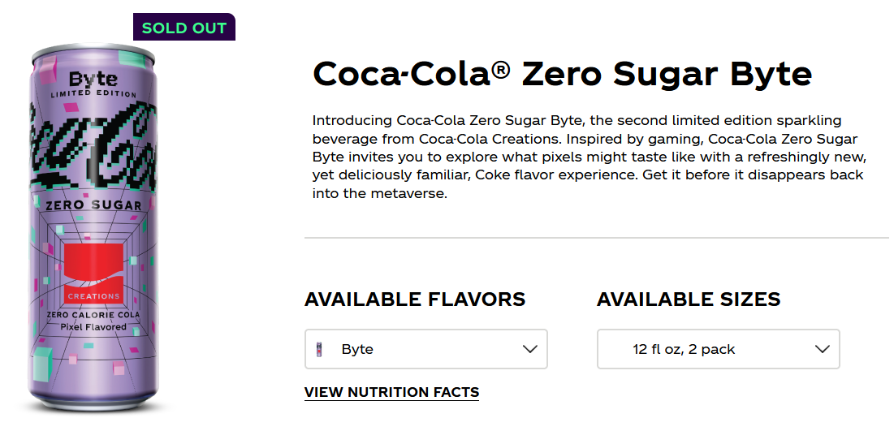

I love to type. I felt like starting this by saying "I love to write" implies that the text I'm describing is some form of literature, which I think gives it too much credit. Very often, I'll get caught on one topic for a bit, and then I'll ramble on about it in the general chat of a server I'm in. While there's not much quality or substance to these ramblings, I still think that they might contain at least some entertainment, so I gathered them here, organized them for ease of reading, and tagged them based on the subject of the rambling, the length, etc. Have fun.
List of ramblings to find:
- Smarty Pants' Wikipedia page
- The ISAC Timmics (deeper rabbithole with Rickwas and the sockpuppets)
- Mark Zuckerberg's realistic VR avatars.
- Check the Apple Vision Pro ramble and see if there's anything good in there.
- Facebook Pets' BFG 2000
- Pumpkin Spice Coca-Cola
- The Entire TruthGPT rambling (the closest thing to something "cool" on this entire list) (note: UWUify certain messages for anonymity like a witness protection voice pitch change)
Coca-Cola's Creations Are Ignoring The Most Obvious Flavor
So, this rambling started with a single question: Would a pumpkin cola work? It sounds like a weird concept, but pumpkin spice is arguably the definitive
fall flavor. I don't really consider myself a fan of pumpkin spice, but I can't deny the popularity. So first, I searched for the ingredients in cola. I
remembered cinnamon being an ingredient, but I wanted to check first, just in case. Upon searching, however, I saw something that brought out a rage which
would come to define this rambling.

Point is, cinammon is a typical ingredient in colas, and it's also a spice. So I looked to see if Coca-Cola had made a Pumpkin Spice Cola,
I wonder if Pumpkin Cola would work. Cola has spices in it, right?

FUCK OFF. THERE ARE OTHER KINDS OF COLA. COLA IS A FUCKING GENRE OF BEVERAGE. IT'S NOT JUST FUCKING
COCA-COLA. WHEN I SEARCH UP COLA I'M NOT LOOKING FOR ALL THE SHIT IN COCA-COLA THAT ISN'T EVEN THAT THOROUGH AND IS JUST A FUCKING LIST OF THE SHIT
THEY'RE REQUIRED TO DISCLOSE AND NOT EVEN THE INGREDIENTS THAT MAKE UP FUCKING COLA, I'M LOOKING FOR THE BASIC FUCKING COLA FLAVORINGS.
Anyways, back to the point at hand. Cinnamon is an ingredient in cola, and cinnamon is a spice. Pumpkins and spices are a very popular fall combo, so I
feel like Pumpkin Cola should be a more popular concept. So, has Coca-Cola made a pumpkin spice cola? No, but they have made a little something else
related to pumpkins.

You're telling me that Coca-Fucking-Cola's Twitter account posted a STENCIL TO CARVE THE FUCKING COCA-COLA LOGO INTO A PUMPKIN, AND THEY NEVER EVEN MADE A
FUCKING PUMPKIN SPICE FLAVOR???????????? YOU GUYS ARE GOING TO GET YOUR BRAND PUT ON A PUMPKIN BUT NOT PUT A PUMPKIN INTO YOUR BRAND??????????
Sorry for the outburst, I've been thinking about Pumpkin Cola as a concept for a bit. I don't even really like pumpkin spice, I just feel like there's a
huge missed opportunity here. The DEFINITIVE cola company, who have recently been experimenting with dumb flavors, like uh

Gamer

or gamer

or underwhelming
You're telling me that this company is just overlooking the definitive flavor of fall?

YOU MOTHERFUCKERS ASKED CHATGPT TO MAKE WHATEVER THE FUCK THIS IS INSTEAD OF LITERALLY THE MOST OBVIOUS CHOICE KNOWN TO MAN???
And even if you disagree with Pumpkin Spice cola, I'm sure there's millions of people who would drink it. They are actively declining money by not selling it. This
corporation is choosing to not make a hit flavor. They brought back New Coke, a flavor which was famously a disaster, to promote a TV show.

THEY PARTNERED WITH LEAGUE OF LEGENDS TO MAKE AN XP-FLAVORED COK- alright I'm getting way too heated about this. Let's just take a minute to calm dow-

BYTE WAS FLAVORED AFTER THE FUCKING METAVERSE? JESUS CHRIST YOU FREAKS JUST CAN'T STOP MAKING FLAVORS PEOPLE DON'T WANT INSTEAD OF THE ONE FLAVOR THAT WOULD MOST
LIKELY BE A HIT.
Unfortunately, this page doesn't seem to exist anymore, all the archives of it seem to be broken, and I didn't get a screenshot of it, but I do have a message of
me quoting the page:
- Limited edition Coca-Cola beverage that celebrates the everyday magic of pixels.
- The first-ever Coca-Cola flavor born in the metaverse.
- Digitally-inspired cues come together to build a flavor experience that introduces the humble pixel IRL.
{kind=link}
According to The Verge, the flavor isn't exactly the greatest:
We both had the same reaction upon the first sip: “Ew. Bad. No.” Becky said it made her mouth go numb. While that didn’t happen to me, the taste was so off-putting that neither of us wanted to keep drinking it. Of course, my brand is enduring discomfort for The Content, so I drank a good 75 percent of the can before I finally gave up and dumped the rest down the drain.
It is... hard to describe the taste. To start, the soda is sickly sweet, even to someone who doesn’t mind the occasional glass of regular Coke or Sprite. It’s not just sweet, though — there’s a flavor there, but it’s not something I can describe using any of the food words I know. It’s not bright, but it’s certainly not bitter.
There’s something vaguely fruity about Coke Byte. Not in the lemon-lime Gatorade way, where it at least evokes the taste of something natural, but more like how Axe Anarchy has a “dark pomegranate” scent, or how the red NyQuil is technically berry flavored. Both Becky and I commented on how we were reminded of cough syrup.
Doesn't sound ideal, but on the bright side maybe it does properly capture the experience of what eating a pixel would be like (unpleasant). Point is, Coca-Cola has spent so much time and money making all of these stupid flavors that nobody wants, while for some reason completely disregarding the most obvious one. I'm not a big Pumpkin Spice fan so I probably wouldn't be interested, but I'm certain that it would attract infinitely more customers than trying to appeal to gamers, asking ChatGPT, or just throwing a bunch of tech bro buzz words into a blender and then carbonating it. That's all from me, if I try to rant about Coke again please stop me.